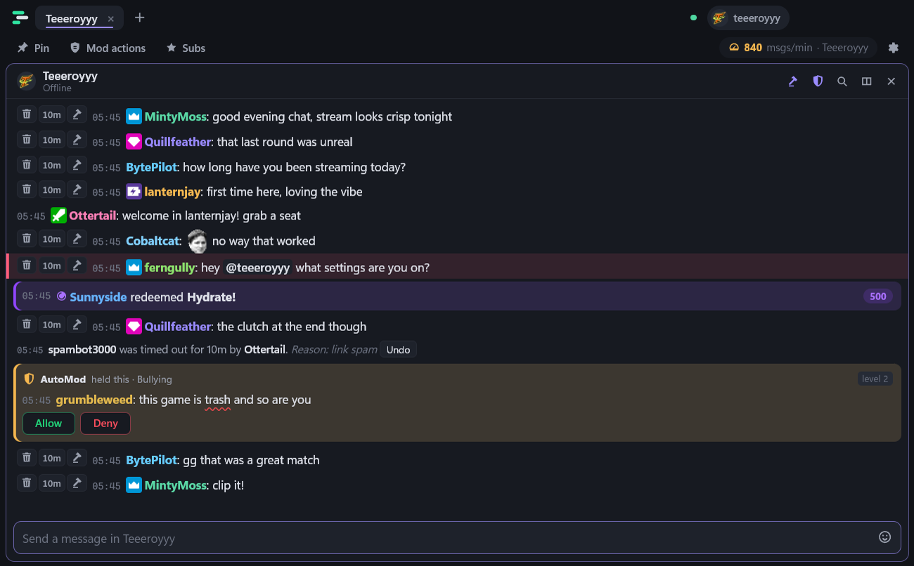
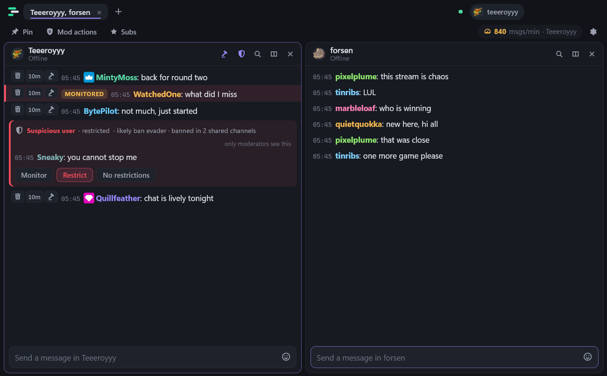
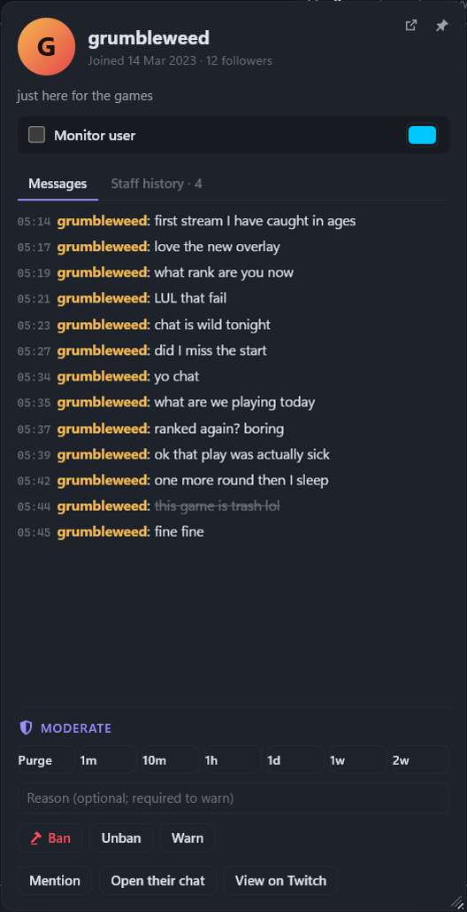
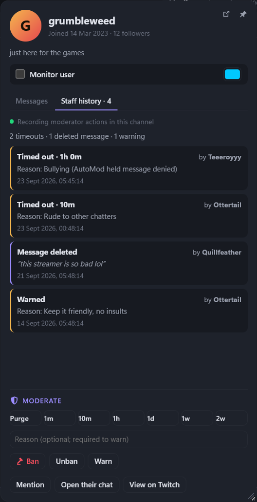
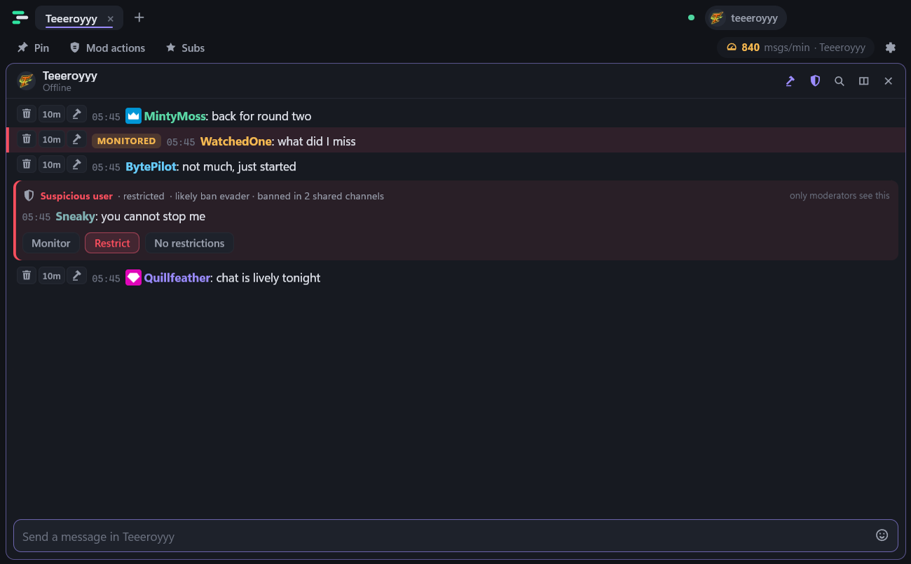
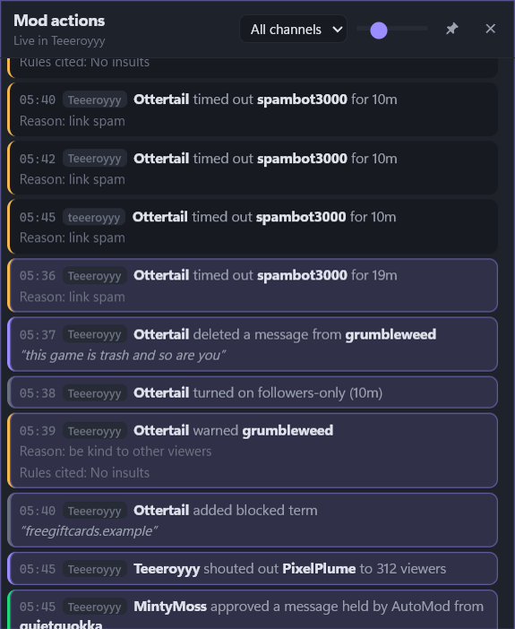
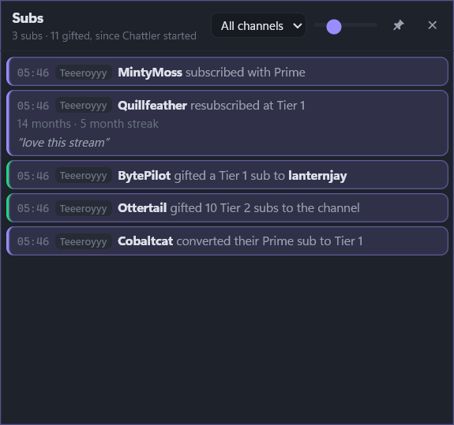
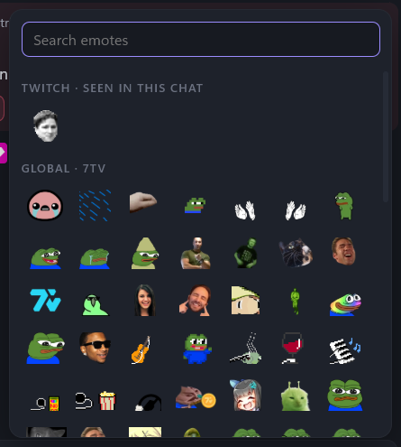
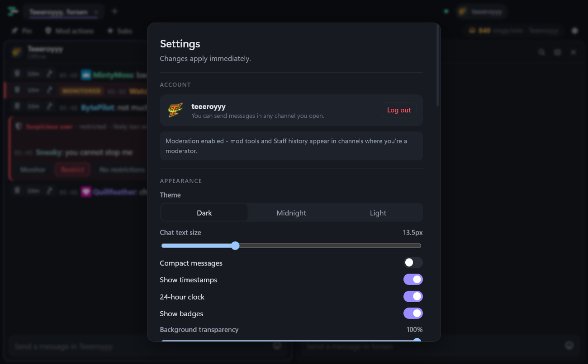

Screenshots
Chattler, end to end.
Everything below is the real app. The chatters are made up. Click any picture to see it full size.









Want to try it? Download Chattler, or read the user guide.